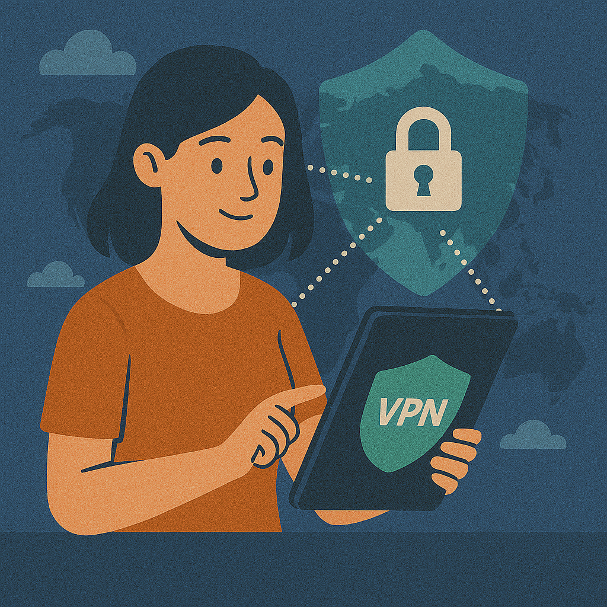

Reenvío de puertos con VPN: guía segura 2026 (torrenting, gaming y acceso remoto)
Respuesta rápida: El reenvío de puertos con VPN abre un “puerto de entrada” en el servidor VPN y lo redirige por el túnel cifrado a tu equipo. Es útil para torrenting (mejor seeding), algunos casos de Open NAT en gaming o hosting pequeño — pero no es para “hacer streaming más rápido”. Y sí: si lo haces mal, te puedes disparar en el pie.
Esta guía es “modo checklist”: qué hacer, qué evitar y cómo comprobarlo con pruebas reales (puerto + fugas). Si eres de los que piensa “bah, luego lo reviso”, te aviso: aquí es cuando pasan las fugas. 😅


Tabla de contenidos
- 1) Qué es el reenvío de puertos con VPN
- 2) Cuándo vale la pena (torrenting, gaming, hosting)
- 3) NAT vs CGNAT: por qué “no se abre el puerto”
- 4) Riesgos reales (y cómo no liarla)
- 5) Qué VPN sirve para port forwarding (2026)
- 6) Configuración paso a paso con Proton VPN
- 7) Diagramas: flujo, puntos de fallo, superficie de ataque
- 8) Pruebas: puerto + fugas (DNS/IPv6/WebRTC)
- 9) Checklist de troubleshooting
- 10) FAQ
- 11) Conclusión
1) Qué es el reenvío de puertos con VPN
Normalmente, una VPN te ayuda con tráfico saliente (tú → internet). El reenvío de puertos va al revés: permite que algo en internet se conecte hacia ti (internet → tú) usando un puerto específico.
Con port forwarding, el proveedor abre un puerto en el servidor VPN y reenvía esas conexiones por el túnel cifrado hacia tu dispositivo, donde una app “escucha” ese puerto (por ejemplo, un cliente de torrent). Importante: el puerto está expuesto en la parte del servidor VPN, así que tú debes controlar qué responde (firewall + app).
| Concepto | Qué significa | Por qué importa |
|---|---|---|
| Puerto | Un “número de puerta” (p. ej., 443, 51413) | Define qué app recibe conexiones entrantes |
| NAT | Traducción de direcciones en tu router | Bloquea inbound por defecto, salvo reglas |
| CGNAT | NAT a nivel ISP (IP compartida) | El port forwarding en tu router puede ser imposible |
| Port forwarding dinámico | El puerto cambia al reconectar | Mejor privacidad, debes actualizarlo en tu app |
| Port forwarding estático | Mismo puerto siempre | Más cómodo, potencialmente más rastreable |
Si todavía estás en “modo base”, te dejo la guía principal para tener el mapa completo: qué es una VPN y proxy vs VPN.
2) Cuándo vale la pena (torrenting, gaming, hosting)
Si tu uso es streaming o navegación normal, el reenvío de puertos suele ser overkill. Donde sí puede marcar diferencia: cuando necesitas conexiones entrantes (P2P, hosting pequeño, algunos escenarios de NAT en gaming).
| Caso de uso | ¿Sirve port forwarding? | Por qué |
|---|---|---|
| Torrenting / P2P (seeding) | Frecuentemente sí | Mejora conectividad con peers entrantes |
| Gaming (Open NAT / hosting lobbies) | A veces | Puede ayudar en NAT estricta; no es magia |
| Acceso remoto / mini-hosting | Depende | Funciona si blindas el servicio (ideal: nada de paneles expuestos) |
| Streaming y geo-bloqueos | No | Importa más IP/reputación/ubicación que puertos entrantes |
| Privacidad general | No necesario | Menos puertas abiertas = menos líos |
Para P2P, mezcla port forwarding con medidas de seguridad: kill switch + pruebas de fugas. Guías clave: VPN para P2P (seguro) y qué es un kill switch.
3) NAT vs CGNAT: por qué “no se abre el puerto”
NAT ya complica inbound (necesitas reglas). CGNAT lo complica todavía más: si tu ISP te mete detrás de una IP compartida, tu router no “posee” una IP pública real… así que puedes abrir puertos en el router y seguir sin recibir conexiones. Sí, es frustrante. Sí, pasa mucho en 2026.
Aquí es donde el reenvío de puertos con VPN ayuda: el punto de entrada es un servidor VPN con IP pública, no tu red doméstica con CGNAT. Dicho simple: alquilas una puerta pública en el servidor VPN.
4) Riesgos reales (y cómo no liarla)
Abrir un puerto no es “malo” por definición. Lo malo es abrir cosas que no entiendes, o abrir demasiadas. El internet está lleno de bots escaneando puertos 24/7. No es paranoia: es estadística.
| Riesgo | Qué pasa | Solución práctica |
|---|---|---|
| Superficie de ataque extra | Un servicio responde en un puerto abierto | Abre 1 puerto, no rangos; limita con firewall |
| Servicio equivocado expuesto | Otro programa “toma” el puerto | Cambia puerto y revisa bindings/reglas |
| VPN se cae | Tráfico puede salir fuera del túnel | Kill switch activado y probado |
| Fugas DNS/IPv6/WebRTC | Tu IP o DNS real se expone | Pruebas y fixes (DNS/IPv6/WebRTC) |
Ojo: si te interesa “seguridad total” (sin postureo), esta checklist te viene genial: seguridad Wi-Fi checklist y seguridad en Wi-Fi.
5) Qué VPN sirve para port forwarding (2026)
Aquí va el punto que confunde a mucha gente: no todas las VPN permiten reenvío de puertos. Y no es “porque sean malas”, sino porque abrir puertos añade riesgo y soporte extra. En 2026, muchas VPN grandes prefieren evitarlo.
| Proveedor | Port forwarding | Tipo | Mejor para | Nota rápida |
|---|---|---|---|---|
| Proton VPN | Sí | Dinámico (puede cambiar) | P2P/torrenting, inbound | Si tu objetivo son puertos, es la vía más limpia |
| NordVPN | No | — | Privacidad general, streaming | Muy sólido, pero no para abrir puertos |
| Surfshark | No | — | Multi-dispositivo, precio | Buen all-rounder sin port forwarding |
Si quieres afinar rendimiento (ping/velocidad), no lo dejes a la suerte: prueba de velocidad VPN y qué servidor elegir.
6) Configuración paso a paso con Proton VPN
Vale, vamos a lo práctico. En la mayoría de casos, el flujo correcto es: conectas VPN → activas port forwarding → configuras el puerto en tu app → ajustas firewall → pruebas. Si te saltas un paso, acaba en “¿por qué sale cerrado?!”.
Checklist rápido (sin drama)
- Activa Port Forwarding en la app de Proton VPN (ajustes/avanzado).
- Conéctate a un servidor compatible (normalmente P2P).
- Anota el puerto asignado (puede ser dinámico).
- Pon ese puerto en tu app (por ejemplo, en un cliente torrent el “puerto de escucha”).
- Firewall: permite solo ese puerto (y si puedes, solo para esa app).
- Prueba el puerto (con la app abierta) y luego haz pruebas de fugas.
Para Windows, revisa configuración de red y firewall aquí: configuración VPN en Windows. Para routers: configuración VPN en router.
7) Diagramas: flujo, puntos de fallo y superficie de ataque
Idea clave: la puerta pública está en el servidor VPN, pero tú controlas qué responde en tu equipo (firewall + app).
Traducción humana: con CGNAT, tu router no tiene “una IP pública tuya”. Con VPN, la IP pública es del servidor VPN.
Regla simple: abre lo mínimo. Un puerto bien controlado vale más que cinco “a ver si sirve”.
Tip real: si tu app no está “escuchando”, el test de puerto te mostrará “cerrado” aunque todo esté bien configurado.
8) Pruebas: puerto + fugas (DNS/IPv6/WebRTC)
Dos cosas separan un setup “pro” de uno “meh”: comprobar el puerto (con la app escuchando) y evitar fugas. Porque sí: un puerto abierto no sirve de nada si tu IP/DNS real se filtra.
Prueba del puerto (flujo práctico)
- Abre tu app (torrent/servidor) y confirma que está escuchando en el puerto correcto.
- Conecta la VPN y activa port forwarding.
- Verifica el puerto asignado (si es dinámico, puede cambiar).
- Haz el test del puerto. Si sale “cerrado”, revisa: app escuchando → firewall → puerto correcto → servidor compatible.
Pruebas de fugas (obligatorias)
| Tipo de fuga | Qué quieres ver | Fix típico |
|---|---|---|
| DNS | Resolvers del VPN / sin DNS del ISP | Protección DNS del proveedor + guía de fugas |
| IPv6 | No se expone tu IPv6 real | Soporte IPv6 del VPN o desactivar IPv6 si procede |
| WebRTC | El navegador no muestra tu IP real | Ajustes del navegador / mitigación WebRTC |
Guía directa para fugas DNS (y arreglos): fuga de DNS con VPN. Y para protocolos (por si quieres entender por qué cambia latencia/estabilidad): protocolos VPN.
9) Checklist de troubleshooting
Si el puerto sale “cerrado”, no asumas que “la VPN no sirve”. La mayoría de veces es algo simple. Sí, aburrido… pero arreglable.
| Síntoma | Causa probable | Solución |
|---|---|---|
| Puerto “cerrado” | La app no está escuchando ese puerto | Configura el puerto en la app y deja la app abierta |
| Funcionaba y luego dejó de funcionar | Puerto dinámico cambió al reconectar | Actualiza el puerto en la app tras reconectar |
| Puertos abiertos “de más” | Reglas demasiado permisivas | Vuelve a “1 puerto, 1 propósito” |
| VPN se cae y hay riesgo de fuga | Kill switch desactivado | Activa y prueba el kill switch |
| Nada entra aunque todo parece ok | Servidor no soporta port forwarding | Cambia a un servidor compatible |
Si tu caso es gaming (NAT estricta, consolas), mira: VPN para gaming y VPN para consolas (PS5/Xbox).
10) FAQ
- ¿El reenvío de puertos acelera los torrents?
- A veces mejora la conectividad con peers entrantes (especialmente para seeding), pero no es un botón mágico de “+200%”. Tu servidor, la distancia y el protocolo importan mucho.
- ¿Necesito reenvío de puertos para hacer torrent?
- No es obligatorio. Puedes usar torrent sin port forwarding. Pero si quieres mejor conectividad (y especialmente seeding), puede ayudar bastante.
- ¿Por qué NordVPN/Surfshark no lo ofrecen?
- Porque abrir puertos añade exposición y complejidad. Algunas VPN priorizan reducir superficie de ataque y enfocarse en otras funciones.
- ¿El reenvío de puertos ayuda con Netflix/DAZN u otros streaming?
- No. Para streaming importa la ubicación y la reputación de IP. Si ese es tu objetivo, entra aquí: VPN para streaming.
- ¿Qué más debería ajustar además del puerto?
- Kill switch, pruebas de fugas y ajustes P2P. Empieza con: kill switch y P2P seguro.
11) Conclusión
El reenvío de puertos con VPN es una herramienta potente cuando la necesitas (P2P/torrenting, algunos casos de gaming o hosting pequeño). Pero no es “ponlo y ya”: abre solo un puerto, ciérralo bien con firewall, usa kill switch y haz pruebas de fugas. Es la diferencia entre “setup fino” y “mañana me arrepiento”.
Si tu objetivo principal es port forwarding, Proton VPN es la elección más directa. Si no necesitas puertos y quieres una VPN “simple y segura por diseño”, NordVPN o Surfshark tienen todo el sentido.
VPN recomendadas para este tema
Enlaces de afiliado (nofollow/sponsored).
Disclosure: VPN World puede ganar comisión si te suscribes desde estos enlaces, sin coste extra para ti.
Vídeo corto: privacidad con VPN, explicado sin rollos
Key takeaway: el trabajo principal de una VPN es separar quién eres (tu IP/ISP) de lo que haces (sitios a los que entras). El reenvío de puertos puede ser útil, pero solo si no rompes esa separación con fugas o malas reglas.
Si el reproductor no carga, míralo en YouTube: https://www.youtube.com/watch?v=rzcAKFaZvhE.
Guías relacionadas
Sobre el autor
Denys Shchur es el creador de VPN World y escribe guías prácticas basadas en pruebas reales sobre VPN, privacidad online y seguridad. Sí, hace tests de fugas más a menudo de lo normal… para que tú no tengas que hacerlo.